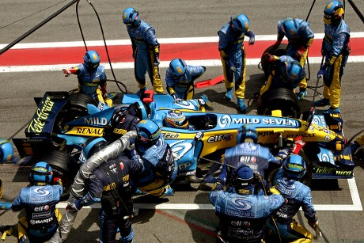

Цікаві факти про Формулу-1
Формула-1 — це не лише гонки, а й вершина інженерної думки.
Кожен болід складається з понад 80 000 деталей, зібраних із найвищащою точністю.
Технічні особливості та рекордсмени
Під час гальмування пілоти відчувають перевантаження до 5G, що порівняно з навантаженнями космонавтів під час запуску.
Легендарні траси календаря
- Монте-Карло (Гран-прі Монако)
- Сильверстоун (Велика Британія)
- Спа-Франкоршам (Бельгія)
- Монца (Італія)
Що потрібно для роботи піт-стопу
- Механіки з гайковертами для зняття коліс
- Механіки з домкратами для підйому боліда
- Страхувальна бригада та випускний механік
Бажаєте зануритися в історію?
Дізнайтеся більше про еволюцію моторів та аеродинаміки.

Бригада механіків виконує заміну коліс менш ніж за 2 секунди.
Детальна статистика та онлайн-таймінг:
Motorsport.com
Вгору: До технічних фактів